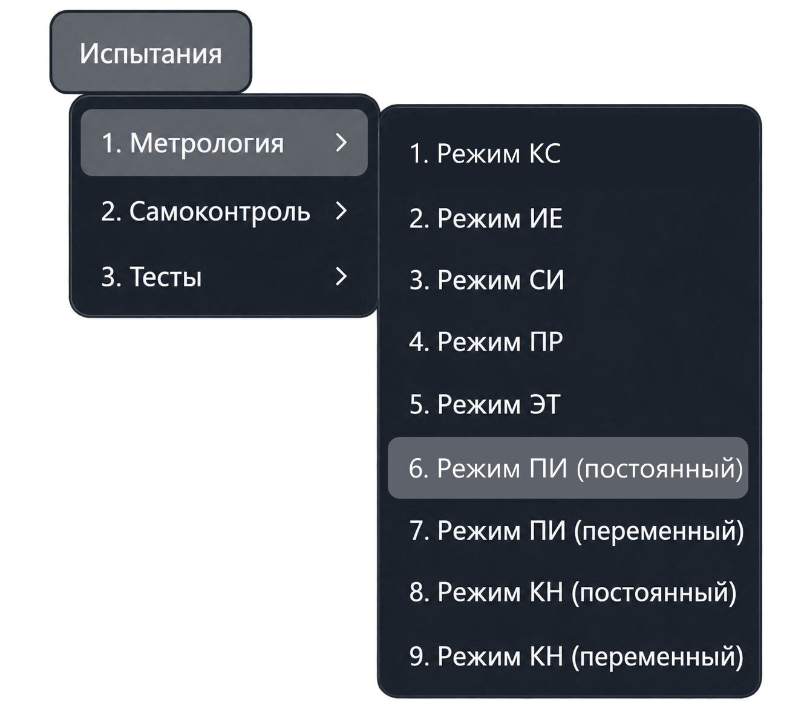
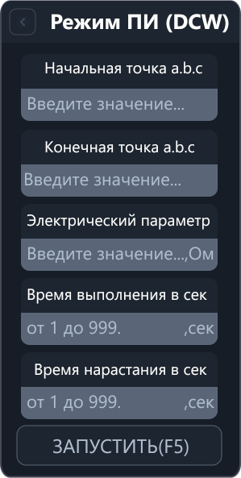
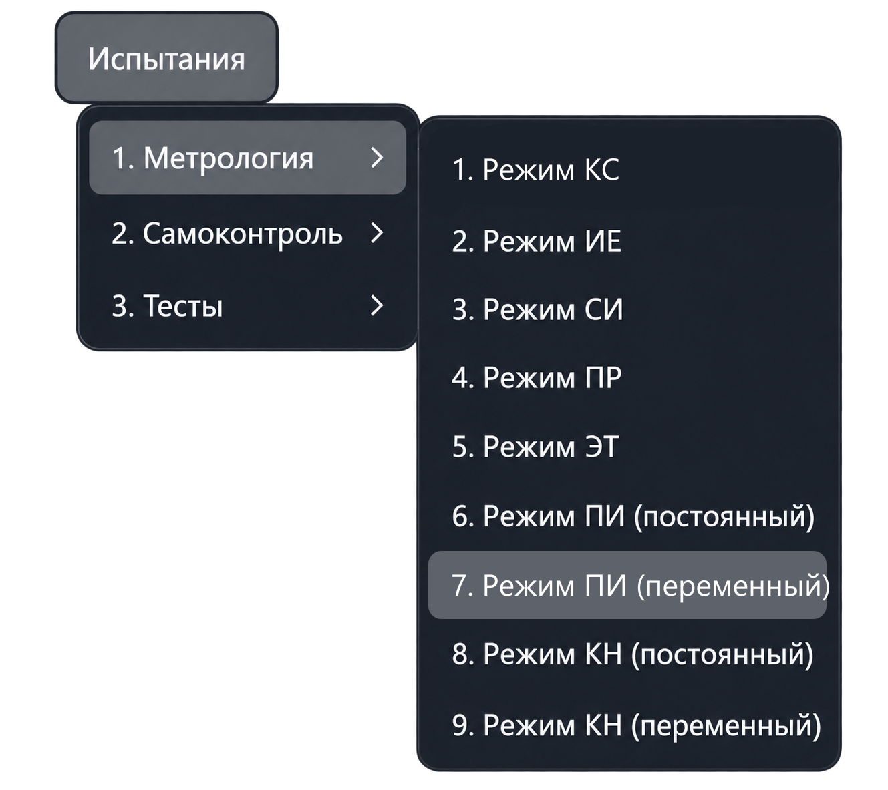
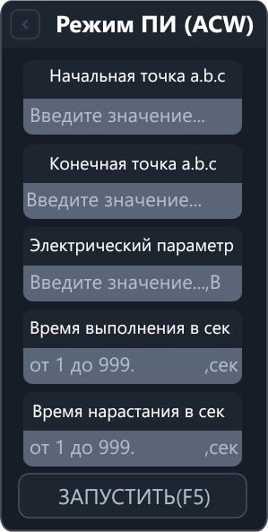

Режим ПИ
Метрологический режим ПИ проверяет погрешность задания испытательного напряжения установкой проверки прочности изоляции. Для оценки используется показание эталонного вольтметра, которое пользователь вводит по запросу приложения.
В меню предусмотрены два варианта: ПИ (DCW) — постоянное напряжение и ПИ (ACW) — переменное напряжение.
ПИ (DCW): постоянное напряжение
Откройте «Испытания → Метрология → Режим ПИ (постоянный)». Команда открывает вкладку «Режим ПИ (DCW)»; измерение запускается отдельно.


Параметры ПИ (DCW)
| Поле | Что указать |
|---|---|
| Начальная точка a.b.c | Первую точку подключения эталонного вольтметра. |
| Конечная точка a.b.c | Вторую точку подключения эталонного вольтметра. |
| Электрический параметр | Испытательное постоянное напряжение в вольтах (В). |
| Время выполнения в сек | Время испытания в секундах. |
| Время нарастания в сек | Время нарастания до заданного напряжения в секундах. |
В адресе a.b.c указываются номер шасси, номер модуля коммутации и номер точки.
Приложение проверяет параметры с учётом возможностей настроенной установки.
Порядок работы
- Подключите эталонный вольтметр к выбранным точкам системы.
- Задайте точки подключения, испытательное напряжение, время испытания и время нарастания.
- Нажмите «Запустить» или F5 в активной вкладке режима.
- Считайте показание эталонного вольтметра при формировании испытательного напряжения.
- Когда приложение запросит эталонное напряжение, введите полученное показание в вольтах.
- Просмотрите результат и погрешность в протоколе. Для повторения используйте действие повтора в запросе приложения.
Ввод параметров сам по себе не запускает испытание. Если приложение сообщает об ошибке ввода или подключения, проверьте указанную причину перед повтором.
Что выполняется после запуска
Приложение подключает аппаратуру, настраивает коммутацию точек и переводит установку в режим DCW. Затем задаёт время испытания, время нарастания и напряжение и запускает испытание.
При неуспешном результате установки в протокол выводится сообщение об ошибке; запрос показания эталонного вольтметра для этой попытки не выполняется.
Результаты
- Заданное напряжение — значение из поля «Электрический параметр».
- Эталонное напряжение — введённое показание вольтметра.
- Погрешность — разность эталонного и заданного напряжения, в вольтах.
Приложение рассчитывает допустимый диапазон для заданного напряжения и проверяет введённое эталонное значение по обеим границам включительно. Выход за границы отмечается в протоколе.
Если в серии выполнено не менее двух измерений, при завершении выводится сводка максимальной отрицательной и положительной погрешности.
Электрический параметр в этом режиме — напряжение в вольтах, а не сопротивление. В запросе эталонного напряжения указывайте фактическое показание вольтметра.
ПИ (ACW): переменное напряжение
Для проверки переменного напряжения выберите отдельный пункт «Испытания → Метрология → Режим ПИ (переменный)». Он открывает режим ПИ (ACW). В нём также задаются точки, напряжение, время испытания и время нарастания, а погрешность определяется по введённому показанию эталонного вольтметра.


Параметры ПИ (ACW)
| Поле | Что указать |
|---|---|
| Начальная точка a.b.c | Первую точку подключения эталонного вольтметра. |
| Конечная точка a.b.c | Вторую точку подключения эталонного вольтметра. |
| Электрический параметр | Испытательное переменное напряжение в вольтах (В). |
| Время выполнения в сек | Время испытания в секундах. |
| Время нарастания в сек | Время нарастания до заданного напряжения в секундах. |
Порядок работы в ПИ (ACW)
- Подключите эталонный вольтметр для измерения переменного напряжения к выбранным точкам.
- Введите точки, напряжение, время испытания и время нарастания.
- Нажмите «Запустить» или F5 в активной вкладке режима.
- Считайте показание эталонного вольтметра при формировании напряжения и введите его в вольтах по запросу приложения.
- Просмотрите результат, допустимый диапазон и погрешность в протоколе.
Приложение настраивает установку в режиме ACW с частотой 50 Гц, заданными напряжением, временем испытания и временем нарастания. Частота задаётся автоматически и не вводится в панели параметров.
Если установка возвращает неуспешный результат, приложение выводит ошибку и не запрашивает эталонное напряжение для этой попытки.
Погрешность рассчитывается как разность введённого эталонного и заданного напряжения. Проверяются обе границы допустимого диапазона включительно. Для серии из двух и более измерений при завершении выводится сводка погрешностей.
Другие режимы описаны в разделе «Меню „Метрология“».